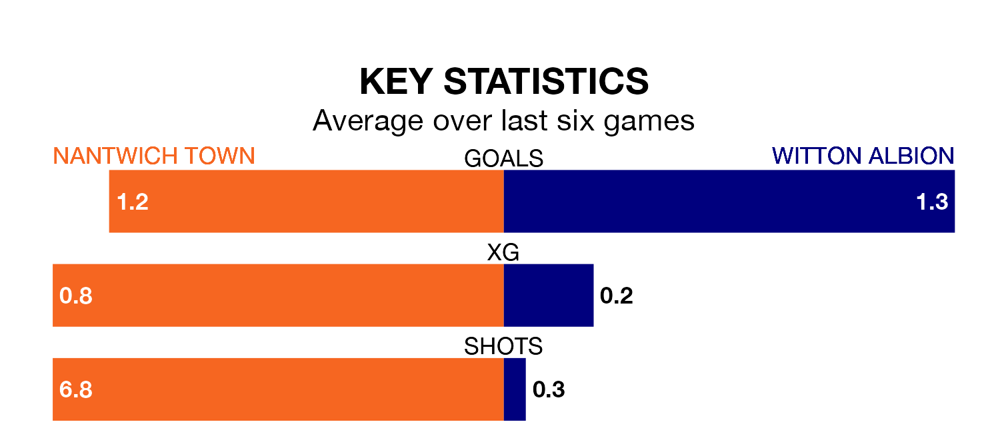

Witton Albion face Nantwich Town on Saturday seeking to protect their long unbeaten run in Northern Premier League Division One West.
Witton are unbeaten in five, with four wins and one draw, ahead of the 3pm kick-off.
They face a Nantwich team who have won two and drawn two over the same number of games.
In the last 10 years, Nantwich and Witton have played each other on 13 occasions. Nantwich won eight of them and Witton five.
On average, Nantwich scored 1.9 goals and Witton 1.5 in those matches.
Their last meeting was on November 28, when Nantwich won 4-1 away.
With 36 goals in 24 games so far this season, Witton are scoring more than average in the league with 1.5 goals per game. But they are conceding more than average too, letting in 46 goals at a rate of 1.9 per game.
Nantwich, meanwhile, are average scorers, with 1.4 goals per game. They have conceded 1.3 goals per game.
Albion are sixth in the table after 24 games, of which they have won 10 and drawn five, earning 35 points.
Town are seven places behind the away team in 13th, with eight wins and four draws putting them on 28 points.
Nantwich's last match was on Tuesday, a 1-0 win against Chasetown.
Witton drew 2-2 with Bootle last time out, on January 13.
Updated: 06:13 (UTC), 18/01/24